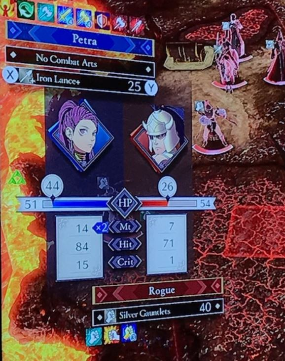

This mechanic shows up when you want to confirm an attack on your turn. It shows you how much damage you and the enemy will deal. It also shows you the hit rate in other words, it tells you how high of a chance you have of actually hitting the enemy with a percentage. Lastly it also shows you how likely your attack will be a critical attack, dealing triple the damage. One last thing, In the picture above you can see that there is a blue arrow with a X2 in it. This tells you you have a high enough speed stat to attack twice in that specific battle.